01
De Vloek Van De Expert
Je weet zóveel dat je vergeet hoe het was om het níet te weten. Je begint bij hoofdstuk zeven. De zaal zit nog op de kaft.
Eén dag in Amsterdam waarin je jouw verhaal leert vertellen met de rust, de spanning en de impact van een geboren spreker. Bekijk hieronder wat er op 8 september gebeurt.
500+ sprekers gingen je voor
4,9 gemiddeld
Deuren Open Over
In Cijfers
Het MAIN CHARACTER Universum
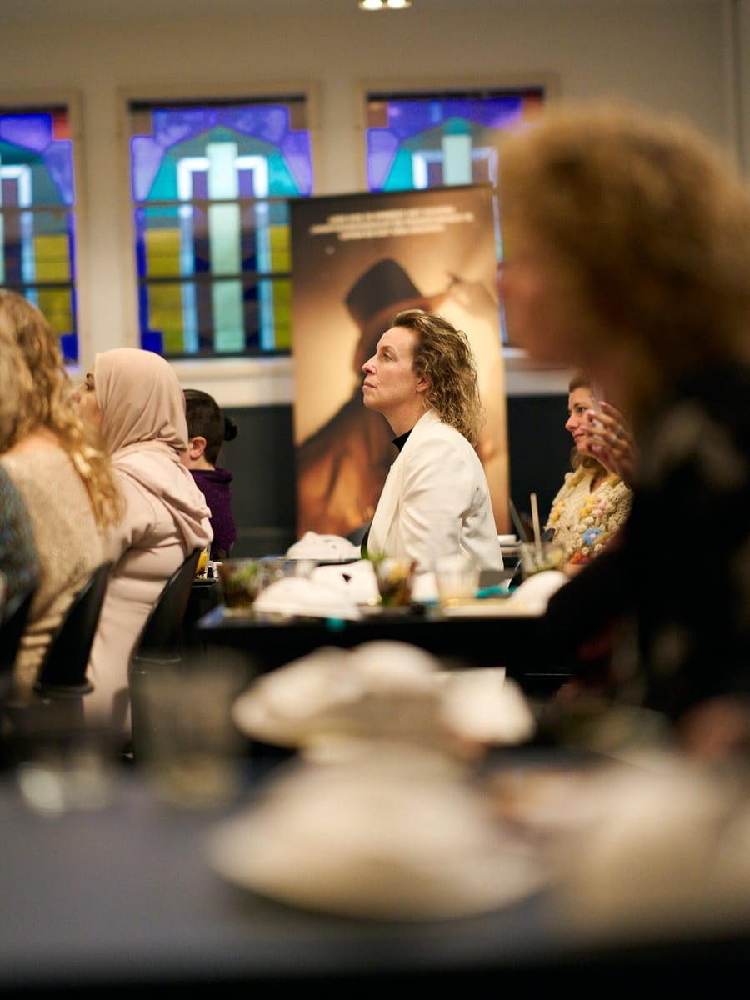
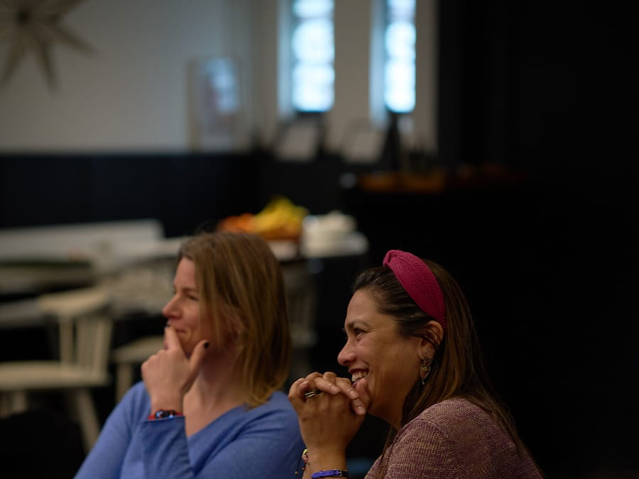
Herken Je Dit
De vergadering liep vast. Jij wist wat er moest gebeuren. Je voelde het in je lijf. Dat lichte duwtje richting het spreken.
En toen deed iemand anders zijn mond open. Zei ongeveer wat jij dacht. Minder precies. Minder doorleefd. En de zaal knikte.
Je fietste naar huis met dat bekende, zeurende gevoel. Niet van jaloezie. Van gemis. Alsof je iets in de kamer had achtergelaten dat van jou was.
Hier is wat niemand je vertelt: het ligt niet aan je verhaal.
Je hébt een verhaal. Je hebt er honderd. Ze liggen achter een deur die je nooit hebt leren openen, omdat niemand het je ooit heeft geleerd. Niet op school. Niet op je werk. Nergens.
Spreken is geen talent waarmee je geboren wordt. Het is een deur. En deuren hebben een sleutel.
Op 8 September Krijg Je die Sleutel.
De Zes Deuren
Het is bijna nooit gebrek aan moed. Het is een van deze zes.
Je weet zóveel dat je vergeet hoe het was om het níet te weten. Je begint bij hoofdstuk zeven. De zaal zit nog op de kaft.
Feiten overtuigen niemand. Ze bevestigen alleen wat men al vond. Een verhaal verplaatst mensen. Daarom onthouden ze het.
Je wacht tot je er klaar voor bent. Maar zelfvertrouwen komt ná het podium, nooit ervoor. Wachten is de enige garantie op stilstand.
Je leende de gebaren van een spreker die je bewondert. De zaal voelt de kopie feilloos aan. Er is al iemand die dat is. Er is er maar één jij.
Je script zit perfect. Je adem niet. De zaal luistert eerst naar je lichaam. Je woorden komen op de tweede plaats.
Een zaal is een abstractie. Je kunt niet raken wat je niet ziet. Grote sprekers praten tegen één mens. De rest luistert mee.
Herken je er één? Dan is 8 september voor jou.
Open De DeurDe Verschuiving
Je hart bonkt al drie dagen voor de presentatie.
Je leest je slides voor. De zaal leest mee.
Je praat sneller zodra je zenuwachtig wordt.
Na afloop: beleefd applaus. Geen enkele vraag.
Je zegt "nee" tegen podia. Elke keer weer.
Mensen kennen je werk. Ze kennen jou niet.
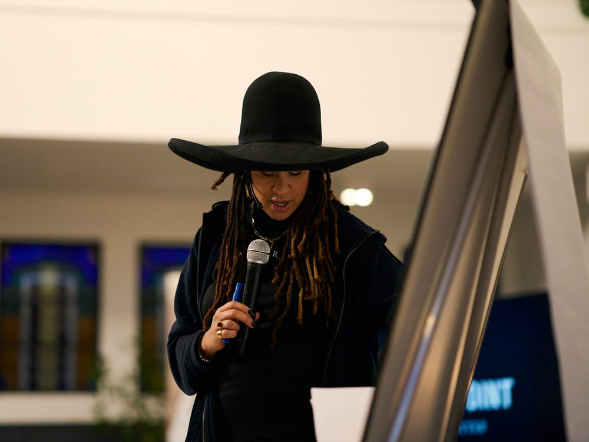
Spanning voelt als brandstof, niet als bedreiging.
Je vertelt. Slides zijn decor geworden.
Je durft te zwijgen. De stilte werkt vóór je.
Na afloop staat er een rij. Ze willen verder praten.
Je zegt "ja" en kijkt uit naar de dag zelf.
Mensen kennen jou. Daarom kiezen ze je werk.
Geen persoonlijkheidstransplantatie. Dezelfde jij, met de deur open.
Van Links Naar Rechts
Niet een jaar therapie. Niet tien cursussen. Eén dag, één zaal, en een groep die je ziet staan.
De Ervaring
Echt licht. Echt publiek. Echte zenuwen. Je stapt niet op met theorie. Je stapt op met je verhaal, en je stapt af als iemand anders.
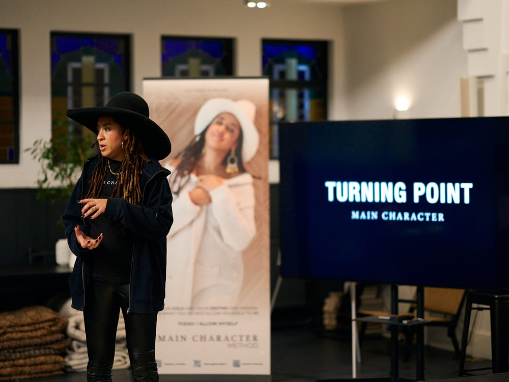
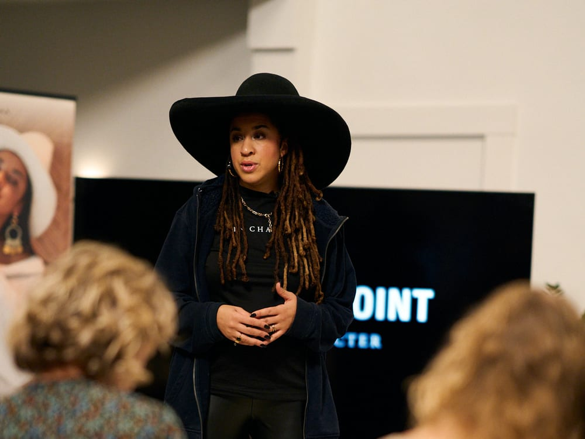
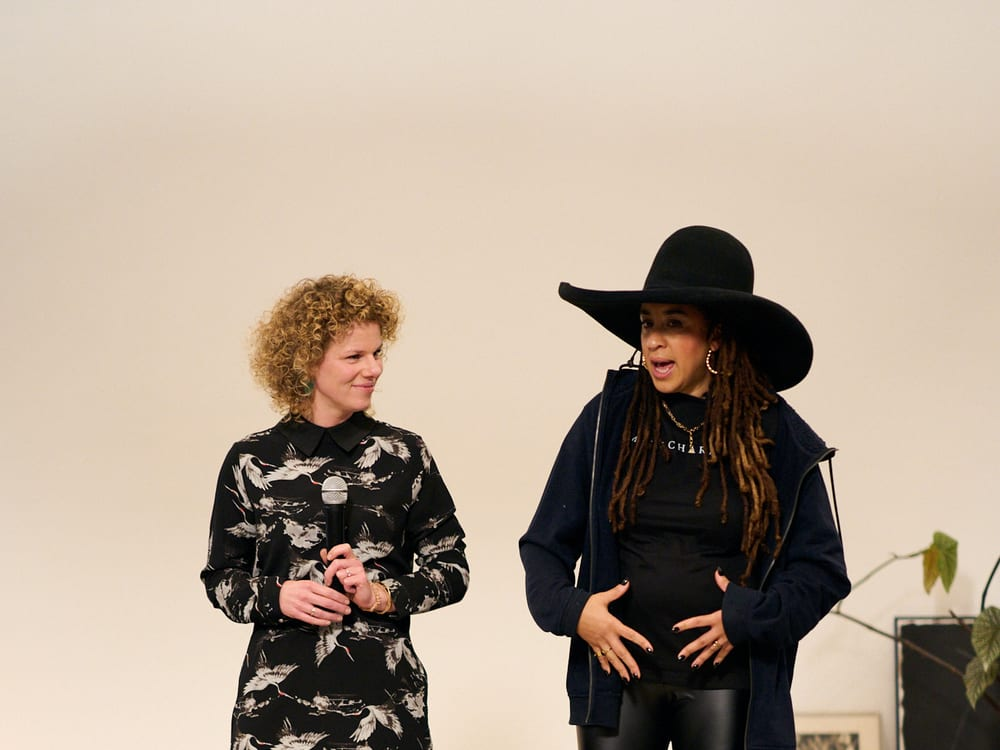
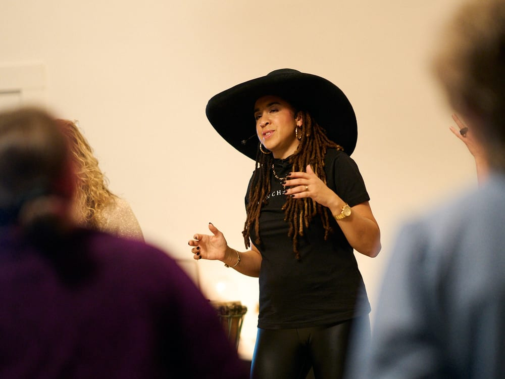
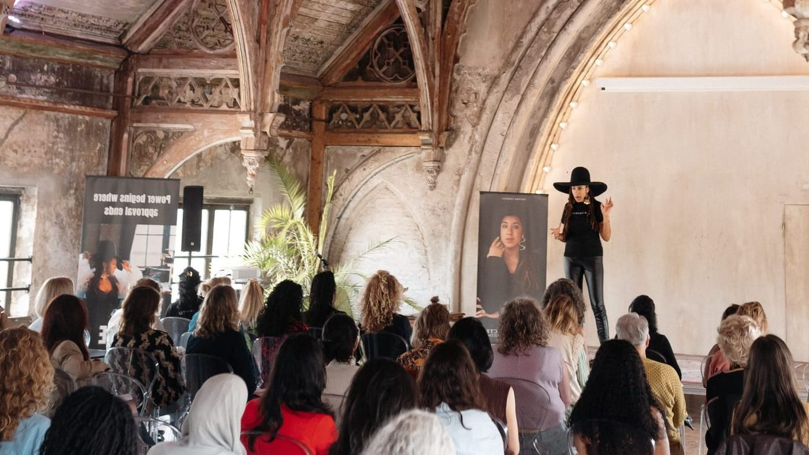
De Vorige Editie
25 juni uitverkocht in twee weken
Dezelfde zaal. Dezelfde regie. Op 8 september is er nog plek voor 12 mensen.
Jouw Verhaal Op Papier
Framework + workbook
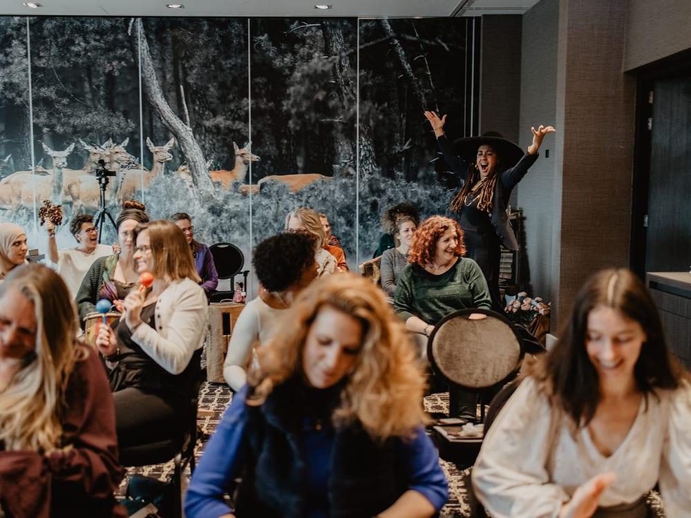
Iedereen Staat Op
Geen toeschouwers
0
Jaar op en achter het podium
0
Events geregisseerd
Je Regisseur Voor Die Dag
Regie en sprekerscoaching. Voor ondernemers die hun podiumkracht willen inzetten.
Onyema begon niet als spreker. Hij begon in het donker, achter de knoppen, naast het podium, met een headset op. Twaalf jaar lang keek hij van opzij naar wat een zaal wél en niet doet.
Hij zag briljante mensen een zaal verliezen in negentig seconden. Hij zag stille mensen een zaal laten opstaan. En hij zag precies waar het verschil zat: nooit in het talent. Altijd in de regie.
Van podia bij de Verenigde Naties tot zalen met tien mensen. Hetzelfde patroon, elke keer. Dat patroon werd de MAIN CHARACTER Methode. En die methode geeft hij op 8 september aan jou.
"Ik maak geen sprekers. Ik haal weg wat er tussen jou en de zaal in staat."
Missie
Dat de mensen met iets te zeggen ook gehoord worden.
Methode
Regie, niet trucjes. Je eigen stem, scherper afgesteld.
Belofte
Je staat die dag op. Zonder uitzondering.
Het Programma
Presence zonder pose. Je leert je zenuwen niet wegademen maar omzetten, zodat je lijf rust uitstraalt op het moment dat het telt. Geen trucjes. Alleen jij, beter afgesteld.
Waarom de ene zin een zaal stil krijgt en de andere langs iedereen heen glijdt. Je leert de emotionele lijn onder je boodschap blootleggen en die durven laten staan.
Het MAIN CHARACTER Storytelling Framework: vijf concrete stappen die van een anekdote een ervaring maken. Je gaat naar huis met jouw verhaal. Af, getest, en op maat van jouw zaal.
Tien mensen of tienduizend. Het mechanisme is identiek, de schaal niet. Je leert een ruimte lezen en je aanwezigheid meebewegen met de maat van de zaal.
Kennis verandert niemand. Beweging wel. De laatste beweging gaat over de vraag die elke grote spreker beantwoordt: wat doet de zaal morgen anders, en hoe vraag je daarom?
Je Gaat Naar Huis Met
Wat Je Krijgt
Een volledige dag in een echte zaal, met echt licht en echt publiek. Iedereen staat op. Iedereen krijgt regie. Niemand kijkt alleen toe.
Je online leeromgeving. Geen cursus voor je webcam maar acht lessen gefilmd op locatie, zodat je de dag al kent voordat je binnenloopt.
De week vóór het event. Jouw vragen, jouw verhaal, jouw twijfel, live beantwoord, zodat je 8 september binnenkomt zonder ruis.
Het complete MAIN CHARACTER raamwerk op papier. Niet om te lezen maar om in te schrijven. Je verlaat de dag met een af verhaal.
Onyema kijkt naar jou. Niet naar de groep. Directe, eerlijke, bruikbare regie op het moment dat je staat.
De Zaal Aan Het Woord
4,9 gemiddeld · 87 beoordelingen
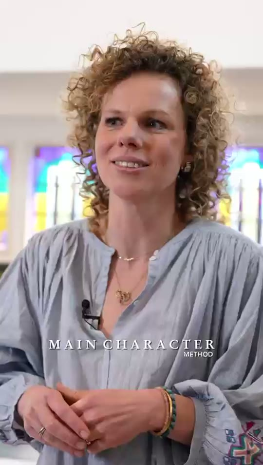
Ik had niet verwacht dat dat al direct zoveel emoties los kon maken.
"Het Framework geeft me echt de tool in handen. Want als het vanuit je eigen visie komt, dán raakt het."
"Het was eigenlijk een dagelijks moment uit mijn leven, dat ik toch op een goede manier kon overbrengen. Het heeft mij tot veel inzicht geleid."
Onyema is echt uitzonderlijk goed in wat hij doet. Het is een flinke investering, maar achteraf had ik er zo het dubbele voor betaald. Zo ontzettend waardevol. Niet alleen voor je omzet, maar ook voor meer impact, zelfvertrouwen, vrijheid en veel meer.
Naomi Beusink
Online Ads Specialist
Ik had al gezien hoe Onyema het event Manifest van Simone Levie regisseerde. Ongelooflijk goed. Toen ik mijn eerste grote event in een theater wilde geven, moest het een echte ervaring worden. In Nederland heb je daar maar één iemand voor nodig. Onyema.
Lindy Stofbergen
Spreker en Human Design Teacher
Onyema begrijpt precies hoe je een community bouwt en onvergetelijke ervaringen voor je publiek maakt. Hij daagde me uit om te groeien en gaf me het vertrouwen om op een veel hoger niveau het podium op te stappen.
Anita Jongman
Expert Voedseltransitie
Onyemaaaaa. Ik heb zoveel gehad aan jouw coaching. Na mijn talk stond er letterlijk een rij mensen te wachten om mij te spreken en met mij te werken. Heel erg bedankt.
Kelly Clark
Coach voor Beauty Ondernemers
Ik ken niemand met zo'n scherp oog voor business en podiumregie als Onyema. Waar ik nu sta, financieel en persoonlijk, had ik een paar jaar geleden nooit durven bedenken. Zijn coaching heeft alles veranderd.
Yarmill Kromhout
Choreograaf, Motivational Speaker en Ondernemer
Op 8 september zit jij in deze zaal.
Ik Wil Ook Op Dat PodiumWat Er Daarna Gebeurde
Van Bang Naar Boekingen
Weigerde elk podium. Dertien jaar lang.
Vier betaalde keynotes in het eerste halfjaar.
Marketingstrateeg · Utrecht
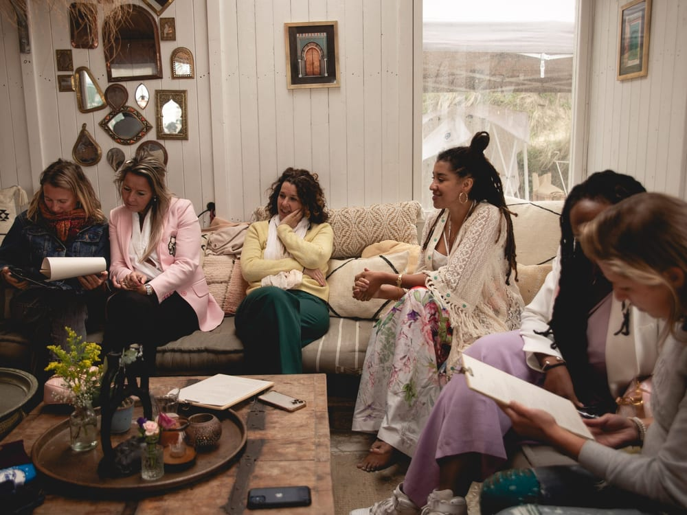
Van Pitch Naar Partner
Zeven investeerderspitches. Zeven keer nee.
Achtste pitch, ander verhaal. Ja binnen tien dagen.
Oprichter, SaaS · Amsterdam
Van Manager Naar Leider
Team luisterde beleefd. En deed daarna niets.
Reorganisatie uitgelegd in één verhaal. Nul vertrek.
Directeur · Rotterdam
De Volgende Naam Op Dit Rijtje
Ze zaten allemaal ooit waar jij nu zit: met een verhaal dat er nog niet uit kwam, en een agenda vol redenen om te wachten.
8 September
Van koffie om half tien tot een zaal die om vijf uur op z'n voeten staat.
09:30
Koffie, zaal, licht. Je voelt meteen dat dit geen vergaderruimte is.
10:00
Binnen dertig minuten heeft iedereen het podium geraakt. Het engste moment ligt dan al achter je.
11:00
Het Storytelling Framework, toegepast op jouw materiaal. Dit is het uur waarin de meeste mensen iets vinden dat ze niet zochten.
13:00
Eten, en ondertussen je verhaal testen op iemand die je vanochtend nog niet kende.
14:00
Je staat. Onyema regisseert. Live, voor de groep, met de precisie van iemand die twaalf jaar naast het podium stond.
16:00
Vol licht. Volle zaal. Jouw verhaal, van begin tot eind. Dit is het moment waar de hele dag naartoe werkt.
17:30
Je gaat weg met een af verhaal, een groep die je gezien heeft, en één concrete afspraak met jezelf.
De Locatie
Geen hotelzaaltje met koud kunstlicht. Een monumentale zaal met een vloer die je voelt, licht dat je warm maakt en akoestiek die stilte draagt. Het exacte adres krijg je direct na je aanmelding.
Bereikbaarheid
Binnen 20 minuten vanaf Amsterdam Centraal.
Parkeren
Gratis parkeren op eigen terrein.
Inbegrepen
Koffie, lunch en een borrel na afloop.
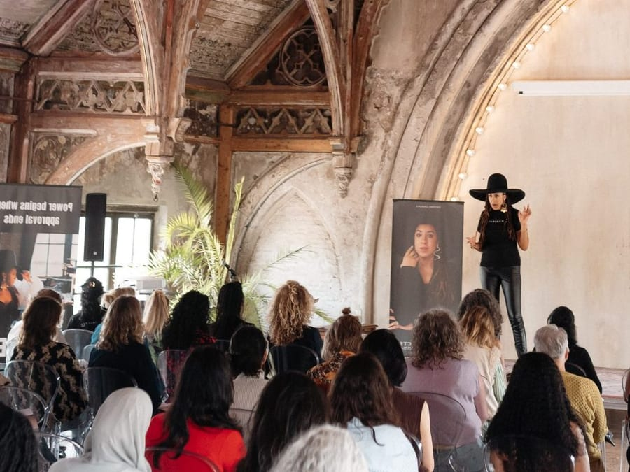
8 september 2026 · 09:30 tot 17:30
Regio Amsterdam
Twijfels
Staat je vraag er niet bij? Mail ons. Je krijgt binnen één werkdag antwoord van een mens.
info@maincharactermethod.nlDat is precies de reden dat deze dag bestaat. De mensen die het spannendst vinden, maken vrijwel altijd de grootste sprong, omdat er het meeste onder de deur vandaan komt. Je wordt nooit onaangekondigd het podium op geduwd. Elke stap is opgebouwd, en de zaal is die dag jouw kant.
Nee. De meeste deelnemers komen binnen met "ik heb eigenlijk niets bijzonders meegemaakt" en gaan naar huis met iets waarvan ze niet wisten dat het een verhaal was. Het opgraven zit in de dag zelf. Dat is niet je huiswerk, dat is het werk.
Omdat deze dag onze voordeur is. Wie hier een keer heeft gestaan, begrijpt wat we doen, en een deel van die mensen werkt daarna verder met ons. Dat is het hele verdienmodel. Geen kunstmatige korting: een bewuste keuze om de drempel laag te houden.
Niet meer dit jaar. 25 juni was uitverkocht, 8 september is de laatste editie van 2026. Nieuwe data volgen in het voorjaar, tegen het dan geldende tarief.
Er wordt gefilmd voor de aftermovie, maar niets van jou wordt gepubliceerd zonder jouw expliciete toestemming. Geef je bij de inloop aan dat je liever buiten beeld blijft, dan gebeurt dat.
Blijf tot de lunch. Vind je dan dat deze dag niets voor je doet? Zeg het bij de balie en je krijgt je volledige investering terug, zonder gesprek, zonder formulier.
Beide. De zaal is meestal half ondernemer, half professional in loondienst. Het mechanisme onder een investeerderspitch en een vergadering met het MT is exact hetzelfde. Er zit alleen een ander logo op de muur.
12 plekken over
De zaal telt 40 stoelen. Meer passen er fysiek niet in.
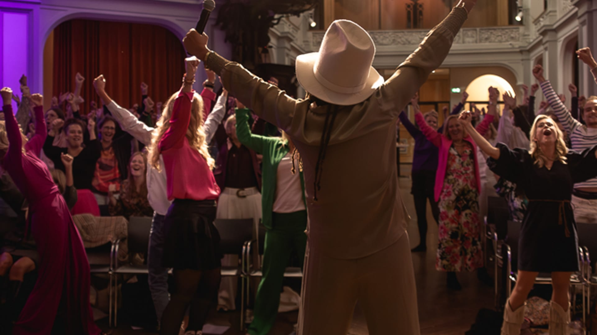
8 September · Amsterdam · 40 Stoelen
Of het is een dinsdag geweest zoals alle andere. Dat is precies het verschil dat je nu, met één klik, zelf kiest.
8 sep · Amsterdam
12 plekken over · €125